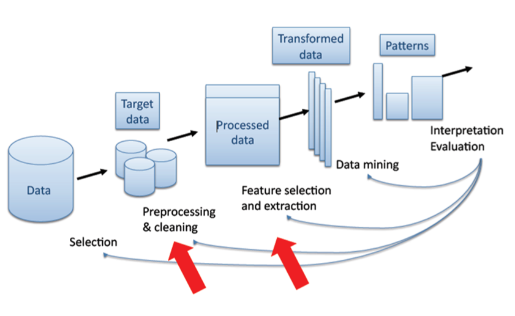

Author: Eko Indarto (ref)
Currently, data in digital form are available everywhere, like on the Internet. It can be used to predict the future. Usually the statistical approach is used. Data mining is an extension of traditional data analysis and statistical approaches in that it incorporates analytical techniques drawn from a range of disciplines. Data mining covers the entire process of data analysis, including data cleaning and preparation and visualization of the results, and how to produce predictions in real-time so that specific goals are met. This page briefly describes data mining, what type of problems can be solved, existing approaches, limitations and the opportunities and benefits that could be picked out for DANS.
Due to the widespread availability of huge, complex, information-rich data sets, the ability to extract useful knowledge hidden in these data and to act on that knowledge has become increasingly important in today’s competitive world. Data mining has been defined as:
What shines through in all these definitions is that data mining is the objective analysis of information that is already there. For example we may collect information on the demographics of our members through our membership application; we may collect information on what products they purchase or what seminars they attend to through the registration database.
Data Mining is an interdisciplinary field bringing together the following techniques (James, n.d.) (ref):
Data mining is actually a part of the knowledge discovery process (KDD: knowledge discovery from data). Data mining can be considered as a step in an iterative knowledge discovery process which is shown in the following figure (Fayyad & Patetsky-Shapiro & Smith, 1996) (ref):
Data Mining Uses: a few examples
It has been said that knowledge is power, and this is exactly what data mining can bring nearer. It is the acquisition of relevant knowledge that can allow us to make strategic decisions, in both the public and private sectors, which will allow our business or organization to succeed. Here are a few snapshots of how data mining can benefit certain industries like, for instance: insurance or marketing (data-mining-software.com, n.d. (ref); exforxysys.com, n.d. (ref); buzzle.com, n.d. (ref), Noton, n.d. (ref))
Risk Management:
Data mining creates models through data analysis and prediction to help solve problems involving both project feasibility and risk management. Data mining has been used to analyze a database containing information on a person’s history, achievements, and expertise. The goal was to develop a profile of the maturity of a certain project involving the resource capacity, especially human capital.
Examples:
Process Control:
Data mining can be used to create models which improve process control, so to increase productivity and to cut costs. Projects often use extensive resources such as machines, materials and human labor and a complicated organization. Those kinds of projects have a tendency to deviate from their starting goal. In some cases this results in the unpredicted need for more time and money in order to complete the project. Data mining can identify the situations where miss-tracked projects are likely to occur. The project managers therefore are able to take preventive action regarding the ongoing projects.
Examples:
Example:
Security:
The Police in the USA had a mass of data from 911 calls and crime reports. What they didn’t have was a way to combine these data and see a pattern of behavior between those two. Data mining can be used to overlay crime reports with other data, such as weather, traffic, sports events and paydays for large employers. The data were analyzed in such a way that something interesting emerged.
Example:
Robberies spiked on paydays near cheque cashing storefronts in specific neighborhoods. Other clusters also became apparent, and pretty soon police were deploying resources in advance and predicting where crime was most likely to occur.
Marketing Plan:
Data Mining can be used as a tool for planning. A large telephone company plans to roll out high-speed Internet access in a new market area. From experience in other market areas, the company has determined that people who purchase high-speed Internet access fit a certain profile. The data which describe this profile are stored in a centrally managed relational database. A mining model is created that includes all of the elements (that is, characteristics) as columns. This model is then trained using the information from the previous market areas. The model can be distributed to new market areas for batch processing of the customers in that market. Additionally, the same model can be incorporated into the new service call center for the company, where the high-speed Internet service can be marketed to new customers that match that specific profile. In either situation, the original data from the previous markets is not needed to make a prediction of the Internet needs of the new customers. The model contains within itself all of the information that is needed to make a prediction. all the information that is needed to make a prediction.
Education:
One of the biggest challenges that higher education faces today is predicting the paths of students and alumni. Institutions would like to know, for example, which students will enroll in particular course programs, and which students will need assistance in order to graduate. Are some students more likely to transfer than others? What groups of alumni are most likely to offer pledges? In addition to this challenge, traditional issues such as enrollment management and time-to-degree continue to motivate higher education institutions to search for better solutions. One way to effectively address these student and alumni challenges is through the analysis and presentation of data, or data mining. Data mining enables organizations to use their current reporting capabilities to uncover and understand hidden patterns in vast databases. As a result of these insights, institutions are able to allocate resources and staff more effectively. Data mining may, for example, give an institution the information necessary to take action before certain students may drop out, or to efficiently allocate resources with an accurate estimate of how many students will take a particular course
Data Mining Issues and Limitations
There are many advantages of data mining technology; however, this technology also has some disadvantages. An article by Abbott and Dwinnell (ref), (2007) points to new trends in data mining: “The general consensus was that mining will move more inside the database”. This type of observation brings the issue of privacy into more prominence. When a public company has information such as name, address, age, sex, marital status, education, income, occupation etc. and links them to medical data, purchase data, tax data, Internet usage, etc., the behavior of consumers or citizens becomes then very predictable. This knowledge provides a significant commercial advantage. People will find it hard to protect their personal data, so we rely on technology and law agencies to protect it. In the USA for example, there is HIPPA, a strict law that protects medical data of patients. In the Netherlands, there is WGBO (Wet op de geneeskundige behandelingsovereenkomst), where the rights and obligations of workers and patients are regulated. The EU has Directive 95/46/EC. This directive concerns the protection of individuals with regard to the processing of personal data and the free movement of such data. The Directive 95/46/EC was implemented in the Netherlands in the Data Protection Act (Wet Bescherming Persoonsgegevens). The Directive focuses on persons, organizations, businesses, and the (local) government that process personal data. The EU has also Directive 97/66/EC. The directive is made to protect the privacy of personal data in the Telecom sector. Because of the sensitivity of the data, most countries have some sort of data protection act.
Apart from these legal restrictions, there are also technological limitations: while data mining products can be very powerful, they are not self contained applications. To be successful, data mining requires skilled technical and analytical experts. They can structure the analysis and interpret the output that is created. Therefore, the limitations of data mining are primarily data or personnel related, rather than technology-related. Although data mining can help discover patterns and relationships, it does not inform about the value or significance of these results. These types of determinations must be judged and made by the user. Similarly, the validity of the revealed patterns is dependent on how they compare to “real world” conditions. Another restriction of data mining is that while it can identify connections between behaviors and/or variables, it does not necessarily identify causal relationships.
Data Mining Techniques (Aggarwal & Yu, 1999 (ref); Microsoft (ref), 2008)
The most important thing to remember is that no one tool or set of tools is universally applicable. For any given problem, the nature of the data itself will affect the tool we choose. Consequently, we’ll need a variety of tools and technologies to find the best possible model.
Regression ( Lew & Mauch, 2006) (ref):
This is one of the most popular statistical techniques among the Data Mining community. Regression is based on the analysis of a set of data where the analysis results in a pattern represented by a mathematical formula. This formula can be used as a guide to fit other data and to predict coming data. Algorithm examples (Berk, n.d.) (ref): - Linear Regression - A GAM Fitting Algorithm - CART - Recursive Partitioning
Associations (Aggarwal & Yu, p.13, 1999) (ref):
The most interesting question when dealing with more than one data type is: what is the nature of the relationship between the two data types: is it strong, weak or is there no relation at all? The intention is how to find the causalities between the data values of the different data set attributes. This approach is called Association. The problems usually may be represented as either be 0-1 literals, or they may be quantitative. For example, think of a supermarket where the information maintained for the different transactions is the sets of items bought by each consumer. Then it would be interesting to find out how the purchase behavior of one item affects the purchase behavior of another. An Association Rule helps to find such relationships. In this way the information may be used to support target marketing decisions and to classify multi dimensional data. Algorithm examples (Zhang & Zhang, pp. 25-46, 2002) (ref):
Clustering (Aggarwal & Yu, p.17, 1999) (ref):
Whenever there are huge data sets to be dealt with, it is always a good idea to cluster those data into groups based on their type, their properties and behavior. A very large database can be divided into multidimensional records. By reasoning one can create segments with considerable similarity. Then each of these segments may be handled separately by different applications. For example, in image and video databases, clustering can be used to discover interesting spatial patterns and characteristics and support content based retrievals of images and videos using low-level features such as texture, color histogram, shape descriptions, etc. In insurance applications, different partitions may represent different demographic segments of the population each of which have different risk characteristics, and may be analyzed separately.
Algorithm examples (Berkhin, p.4, n.d.) (ref):
Classification (Aggarwal & Yu, p.19, 1999) (ref):
When we use clustering it is easy for us to classify and cluster the data sets based on their type, their properties and behavior. However, what if we want to classify the data set but we do not know to which group the data belongs. This can make it hard to reveal the information contained in those data sets. This problem should be handled by an approach called Classification. The modern approach of Classification uses a model to build a relationship model. In order to get the best model, supervised learning is used. One approach is to divide the attributes into two categories: a multiplicity of feature or predictable attributes, and a single class label, for example income category. First, examine the data set containing both the predictor variables and the (already classified) target variable, income category. Thus, the algorithm (software) “learns about” which combinations of variables are associated with which income brackets. Then the algorithm would look at new records, for which no information about income bracket is available. Based on the classifications in the original set, the algorithm would assign classifications to the new records. Some well known techniques for classification include the following (Aggarwal & Yu, p.20-21, 1999) (ref):
Software Tools
Currently there is the choice from over 50 data mining software applications (the-data- mine.com, n.d). Surveys conducted by KDD Nuggets and Rexer Analytics have asked people involved in data mining what software they use. While the most popular software is not necessarily the best for a particular purpose, it can help in choosing what software to evaluate. A brief description of a few data mining tools:
The R project is a platform for the analysis, graphics and software development activities of data miners and related areas. It allows statisticians to do very intricate and complicated analyses without knowing the blood and guts of computing systems. R is a well supported, open source, command line driven, statistics package. There are hundreds of extra “packages” freely available, which provide all sorts of data mining, machine learning and statistical techniques. It has a large number of users, in particular in the fields of bio-informatics and social science. It is also a free ware replacement for SPSS.
Weka, developed at the University of Waikato in New Zealand, is a data mining package consisting of a collection of machine learning algorithms for data mining tasks that contains tools for data pre-processing, classification, regression, clustering, association rules, and visualization. Weka is open-source data mining software in Java. An easy to use interface makes it accessible for general use, while its flexibility and extensibility make it suitable for academic use. The algorithms in Weka can either be applied directly to a dataset or called from the programs using Java code. Other data mining offerings lack this level of sophistication and integration.
Keel is a software tool to assess evolutionary algorithms for Data Mining problems including regression, classification, clustering, pattern mining and so on. It contains a big collection of classical knowledge extraction algorithms, preprocessing techniques (instance selection, feature selection, discretization, imputation methods for missing values etc.), Computational Intelligence based learning algorithms, including evolutionary rule learning algorithms based on different approaches (Pittsburgh, Michigan and IRL), and hybrid models such as genetic fuzzy systems, evolutionary neural networks etc.
The modular operator concept of RapidMiner (formerly YALE) allows the design of complex nested operator chains for a huge number of learning problems in a very fast and efficient way (rapid prototyping). The data handling is transparent to the operators. It is well suited for analyzing data generated by high-throughput instruments, e.g., genotyping, proteomics, and mass spectrometry.
Tanagra is a data mining suite built around a graphical user interface wherein data processing and analysis components are organized in a tree-like structure in which the parent component passes the data to its children. It is free software for academic and research purposes. It proposes several data mining methods from exploratory data analysis, statistical learning, machine learning and databases area. Also, it contains other paradigms such as clustering, factorial analysis, parametric and nonparametric statistics, association rule, and feature selection and construction algorithms.
Knime, pronounced “naim”, is a nicely designed data mining tool that runs inside the IBM’s Eclipse development environment. It is a modular data exploration platform that enables the user to visually create data flows (often referred to as pipelines), selectively execute some or all analysis steps, and later investigate the results through interactive views on data and models. The Knime base version already incorporates over 100 processing nodes for data I/O, preprocessing and cleansing, modeling, analysis and data mining as well as various interactive views, such as scatter plots, parallel coordinates and others. It integrates all analysis modules of the well known Weka data mining environment and additional plugins allow R-scripts to be run, offering access to a vast library of statistical routines.
Questions for DANS
How can we make a useful and strategic use of data mining in our organization? This question depends first of all on the task which is defined. The question that has to be answered is: what do we want to know? What problem are we trying to solve? What decision are we trying to support? That should be the starting point. There is a potential for research but the questions have to be formulated in the first place by the researchers themselves. For example, within DANS, who is making use of what data sets and can there be any patterns detected in the use of data sets by our researchers? Outside DANS, the combining of data sets with data mining techniques can entail new research projects. These questions imply first of all the availability of data. As real-world data tend to be incomplete, noisy and inconsistent, data preprocessing is an important issue for both data warehousing and data mining. Data preprocessing includes data cleaning, data integration, data transformation, and data reduction. In EASY there are presently about 20.000 data sets, comprising totally 1.000.000 files. The volume is 3.9 TB and it consists of various types of data: spreadsheets, word documents statistical files, very many photos, pdf’s, etc. Over 11.000 users are involved. It needs further investigation to find out and decide which data sets are suitable for data mining. Having said this, many data mining tools have been developed for domain-specific applications, including finance, industry, science, engineering, government data analysis etc. Such practice integrates domain-specific knowledge with data analysis techniques and provides mission-specific data mining solutions. Therefore, the most suitable and appropriate tools and techniques must be selected.
As we have seen, there are many data mining systems and research prototypes to choose from. When selecting a data mining product that is appropriate for one’s task, it is important to consider various features of data mining systems from a multidimensional point of view. These include data types, system issues, data sources, data mining functions and methodologies, tight coupling of the data mining system with a database or data warehouse system, scalability, visualization tools, and data mining query language and graphical user interfaces. An important issue is that of privacy and data security, particularly as the amount of data collected on individuals continues to grow. Fair information practices were established for privacy and data protection and cover aspects regarding the collection and use of personal data. Data mining for counterterrorism raises concerns for privacy due to the possible access of personal data. Efforts towards ensuring privacy and data security include the development of privacy-preserving data mining (which deals with obtaining valid data mining results without learning the underlying data values) and data security–enhancing techniques (such as encryption).
Eko Indarto, developer at DANS
Larose, D. T., 2005, Discovering knowledge in data: an introduction to data mining
Hand, D. Mannila, H. Smyth, P., 2001. Principles of Data Mining, MIT Press, Cambridge, MA
Webopedia, n.d., Data Mining
Cabena, et al, 1998, Discovering Data Mining: From Concept to Implementation, Prentice Hall, Upper Saddle River, NJ.
James, R., n.d., Data Mining Presentation
Fayyad, U..M., Piatetsky-Shapiro, G., Smyth, P., 1996, The KDD Process for Extracting Useful Knowledge from Volumes of Data
Data-mining-software.net, n.d., Data Mining: The Benefits
Exforxys.com, n.d., Data Mining - Data Mining Advantages
Buzzle.com. n.d., Benefits of Data Mining
Noton, A., n.d. The Benefits of Data Mining
Abbott, D. and Dwinnell, W., 2007, Future Data Mining trends
Aggarwal, C.C. and Yu, P.S., 1999, Methodologies for Knowledge Discovery and Data Mining. Data Mining Techniques for Associations, Clustering and Classification
Microsoft, 2008, Data Mining Algorithms (Analysis Services - Data Mining)
Lew, A and Mauch, H., 2006. Introduction to Data Mining Principles, Studies in Computational Intelligence (SCI) p. 38
Berk, R. A., n.d., Data Mining Within A Regression
Zhang, C., Zhang, S., 2002., Association Rule Mining
Berkhin, P. n.d., Survey of Clustering Data Mining Techniques
R-project.org, n.d., R
The University of Wakiato, n.d., Weka 3: Data Mining Software in Java
Keel.es, n.d., Knowledge Extraction based on Evolutionary Learning
Rapid-i.com, n.d., RapidMiner
Rakotomalala, R., 2008, Tanagra Project
Knime.org, n.d., KNIME